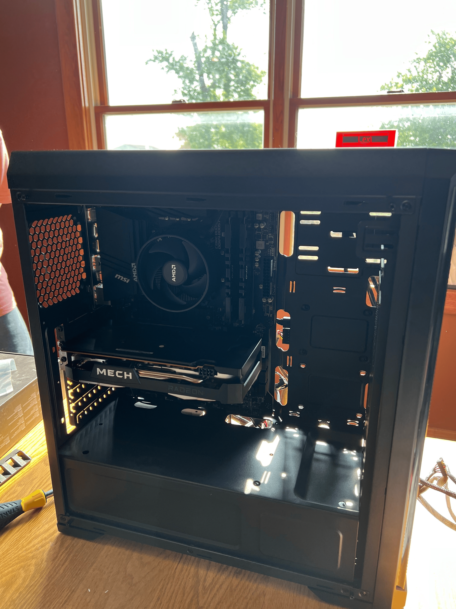
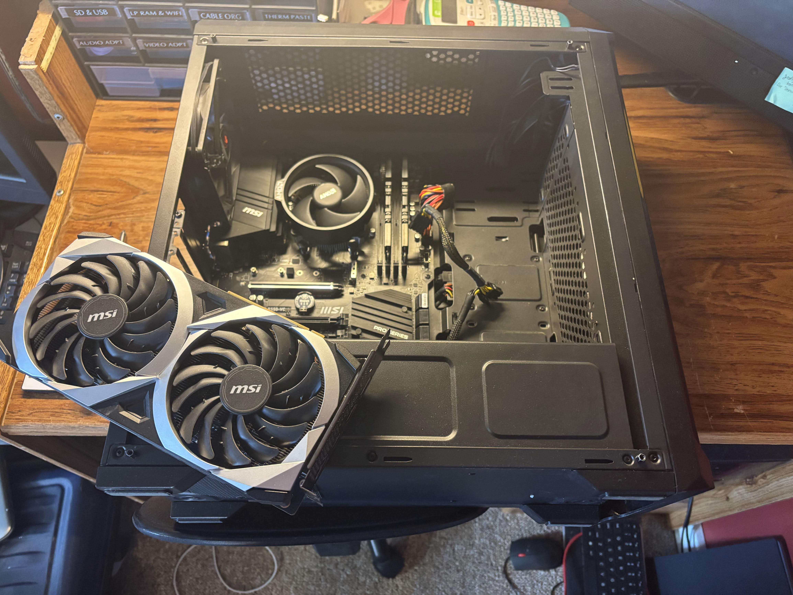
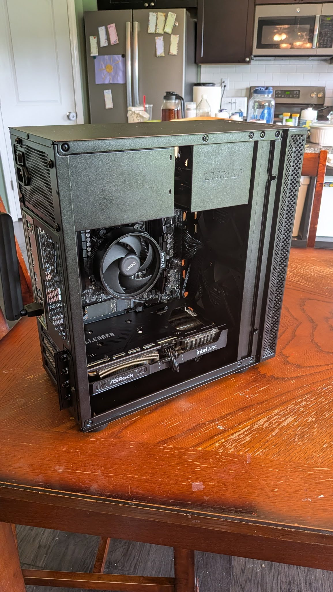
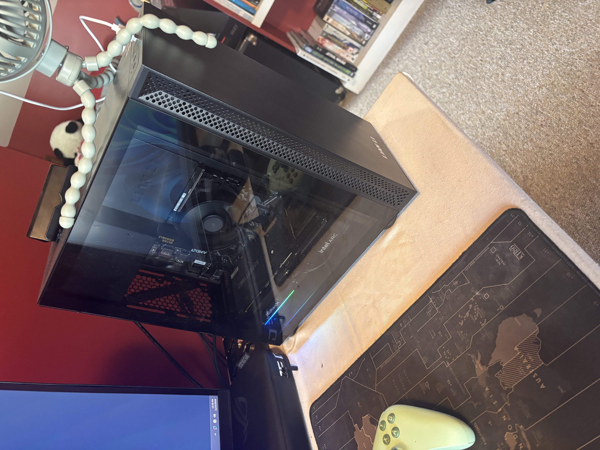
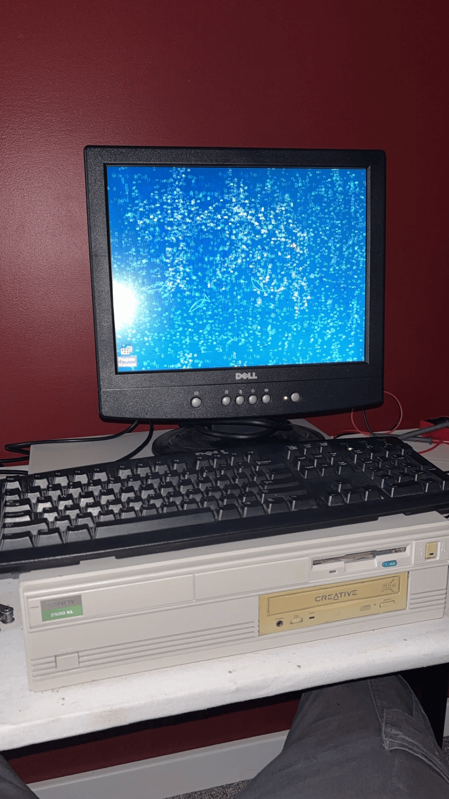
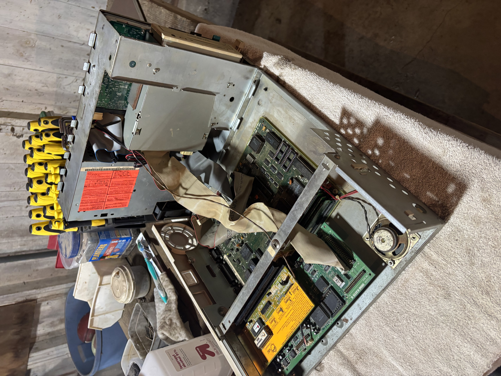
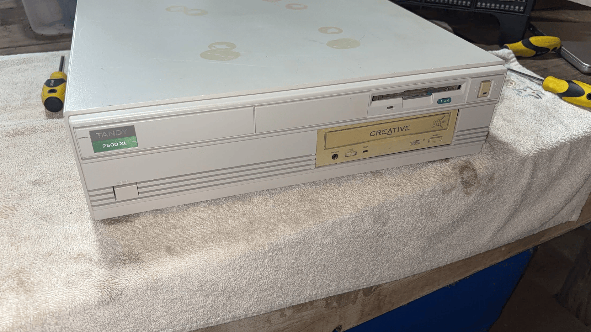
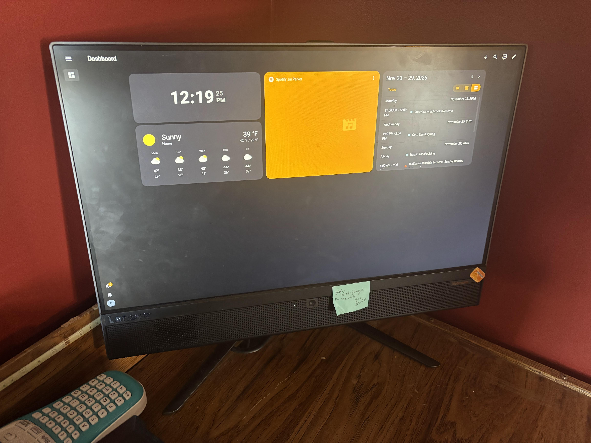
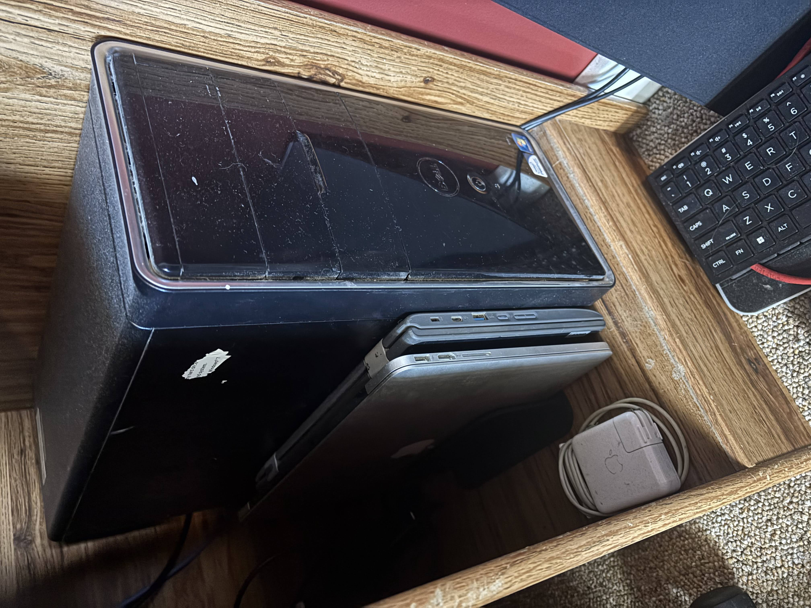
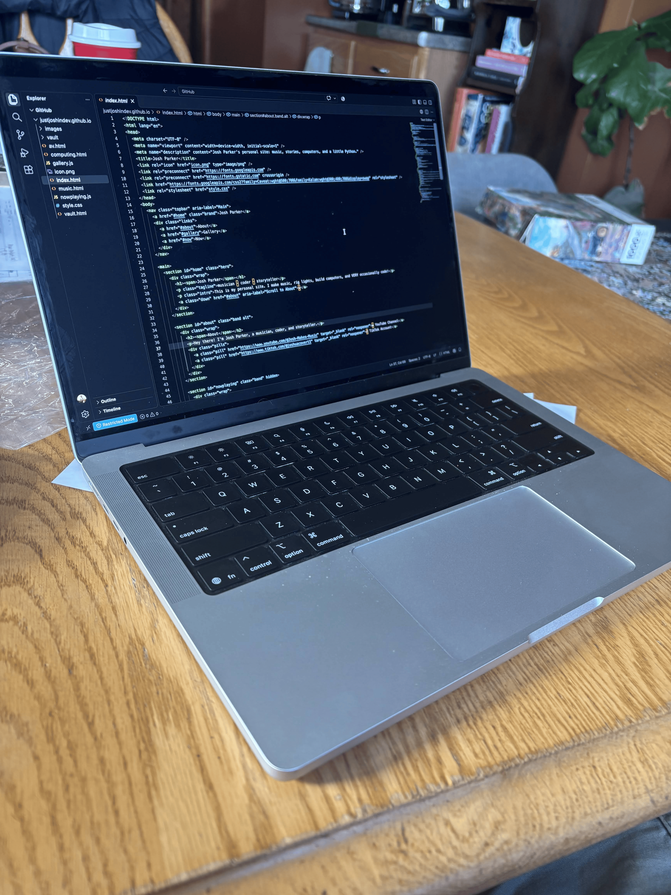

Original Build
My first build! Built in 2023, it was an ATX build housing an AMD Ryzen 5 5600, 16GB of RAM, and an AMD Radeon RX 6650XT. Currently, it's disassembled and has been downgraded to 8GB of RAM and a Ryzen 5 5500.


My first build! Built in 2023, it was an ATX build housing an AMD Ryzen 5 5600, 16GB of RAM, and an AMD Radeon RX 6650XT. Currently, it's disassembled and has been downgraded to 8GB of RAM and a Ryzen 5 5500.


One day, Joel and I were sitting around being extremely bored. Legend has it, we decided to blow a crap ton of money on a fresh build! Built in 2026, it housed an AMD Ryzen 5 5500, 16GB of RAM, and an Intel Arc B580 (12GB). It has since been upgraded to a Ryzen 5 5600 and 32GB of RAM, and is my current daily driver.



I pulled my Tandy 2500XL out of an actual trash pile in 2026. It did not display any video at first, but after a disassembly, a deep cleaning, and quick reassembly, it booted into DOS, and then Windows 3.1! It has 8MB of RAM, a 10MB HDD and an Intel 286 processor. It came with a Creative Sound Blaster 16 and accompanying CD drive, but I need to fix the drivers.

I purchased this Lenovo IdeaCentre All-In-One from my local library a few years back. I was using it for a second monitor, but that stopped working. The compute isn't powerful (AMD E2-9010, 8GB RAM), so I came up with its new, low power use case. It now runs Debian 13 with Home Assistant and a small motion detection script for the webcam. Now I can see the weather when I walk out my door in the morning!


I have lots of other computers too! Pictured is my NAS (repurposed Dell Inspiron), my old MacBook Pro (13" from early 2014), a Lenovo Chromebook (souvenir from serving my time in a public high school), and finally my beloved MacBook Pro 2026 with M5 and 16GB of RAM. Not pictured is my ROG Ally and some other small devices.